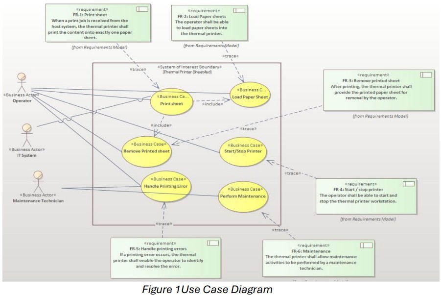
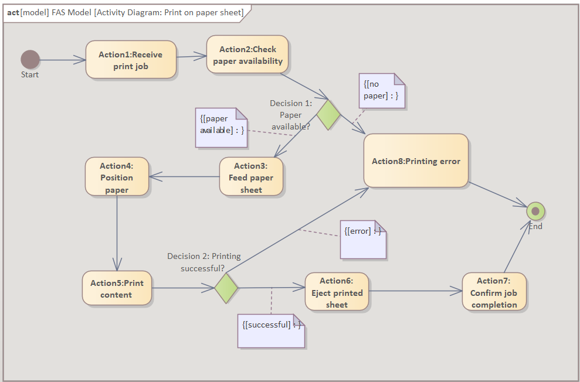
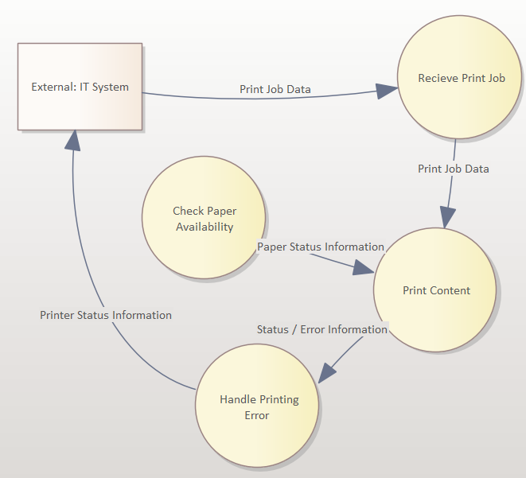
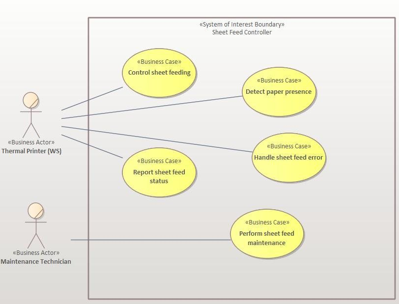
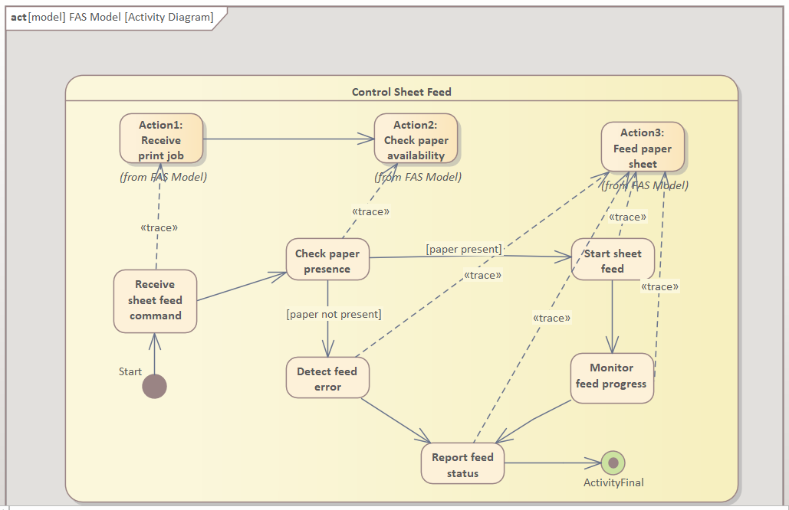
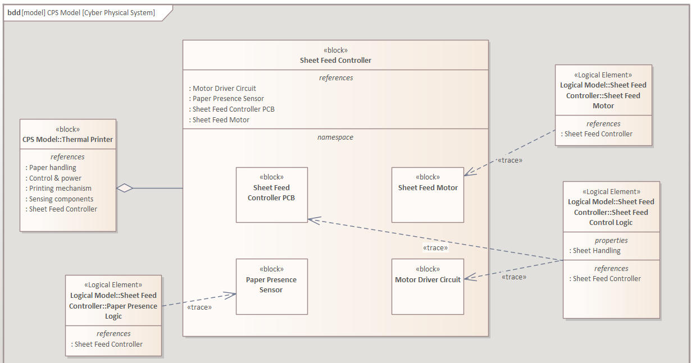

Work / P.03 · Case study
Thermal Printer MBSE Model (RAMI 4.0)
Model the workstation's goals with no implementation in them. Then refine downward until you reach the motor. If a reader can follow one requirement the whole way, the model works.
- Context
- Enterprise Architecture & RAMI 4.0 — M.Sc. OVGU Magdeburg, Winter Semester 2025/26
- Tool
- Enterprise Architect (Sparx Systems) — the modelling tool, not the TOGAF discipline
- Scale
- Two hierarchy levels · seven layers · 30 diagrams
- My scope
- The Sheet Feed Controller in full — all seven layers, every diagram, and the traceability back to the workstation requirements. At Work Station level I owned the Business, Function and Information layers; the WS PPR layer was joint. My teammate took the remaining WS layers and the Platen Force Controller.
Top: the workstation, no hardware named



Bottom: the Sheet Feed Controller, mine end to end



Splitting the two control devices one each — rather than by layer — meant both were modelled to the same depth. Vertical integration comes from the refinement chain; horizontal integration between the controllers runs through the Information and Communication layers.
What I'd do differently
- The third RAMI axis is missing. Layers and Hierarchy Levels are covered; Life Cycle & Value Stream isn't. Nothing separates type from instance, or development from field service — which is where RAMI earns its keep.
- Traceability is manual. The links are drawn by hand, so a requirement can quietly lose its realisation as the model grows. A coverage report would make it a check instead of a claim.
- Described, not verified. No interface data types or ranges, no state machine for the feed cycle. The model can't yet answer "what if the paper sensor fails mid-feed?"